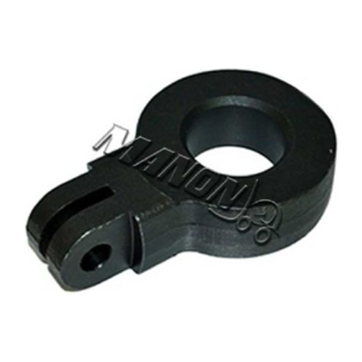

Parts › Mast & Upright › 1430-301

Available
Email for a quote
Toyota 1430-301 Chain Pin
| OEM part number | 1430-301 |
| Fits | Toyota |
| Models / notes | 8FD/G20/25 |
| Category | Mast & Upright |
| Type | Aftermarket replacement |
Send us the quantity you need and we'll reply with pricing, usually within 24 hours. Not the exact part? We can source it. Send the part number or a photo.